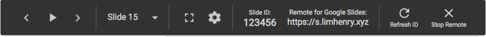

Remote for Google Slides
What is Remote for Google Slides?
Remote for Google Slides is a Chrome Extension + Progressive Web App that allows you to control the presentation slide on another device, remotely.
New in Version 2.0.3:
- Now you don't need to rename the URL anymore! Just click the " Present with Remote" button on the top of the page!
- More controls! Now you can refresh the 6-digit code and stop the remote.
- Now you can control Ludus using Remote for Google Slides! (This feature is currently in beta)
How do I use Remote for Google Slides?
- Open a presentation in Google Slides.
- On the top right, click the " Present with Remote" button.
- Wait until the presentation fully loaded.
- A notification will popup and show a link with a 6-digits code.
- You can also find the code from the bottom control bar. 
- Open s.limhenry.xyz on another device and enter the code on the page.
- You are ready to go!

Tips
Now you can launch the web app from your home screen and app drawer.
- Open s.limhenry.xyz on your mobile device
- Select Add to Home screen from the browser menu
- Done! Now you will see the app icon on your home screen and app drawer
- Note: This only works on certain browser and operating system
Release Note
Version 2.0.3
- Beta Feature: Now you can control Ludus using Remote for Google Slides!
- Added "Present with Remote", "Refresh ID" and "Stop Remote" button.
- Bug fixes
- Improvements for reliability and speed
Version 2.0.2
- New Features: Speaker Note, Timer
- Bug fixes
- Improvements for reliability and speed
Version 2.0.1
- Bug fixes
- Improvements for reliability and speed
Version 2.0
- New logo! New design!
- "Previous slide" is now working
- Improvements for reliability and speed
About
Version 2.0.3. Last updated - December 9, 2017
This extension is created and developed by Henry Lim.
Any question? Find me at @henrylim96 or email me at lets.email.henry@gmail.com.
Disclaimer
This program is not by Google nor is it officially supported by Google
The program is provided as is and the author is not responsible for any problems as a result of the use of this program.